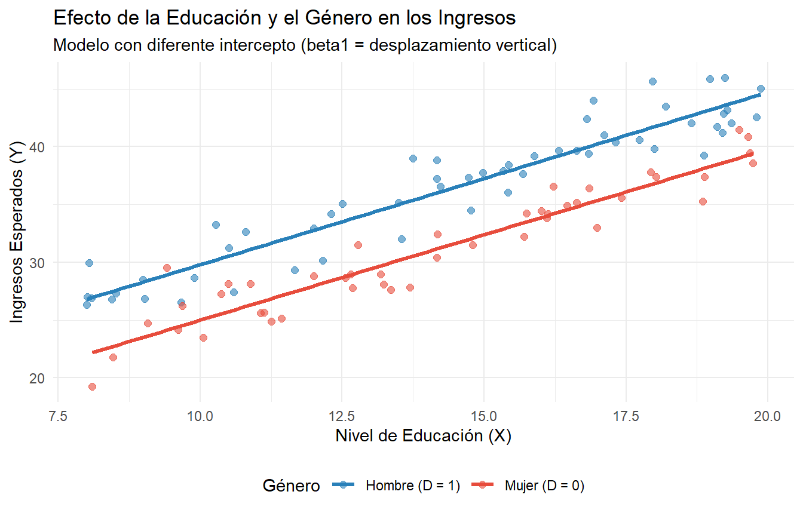
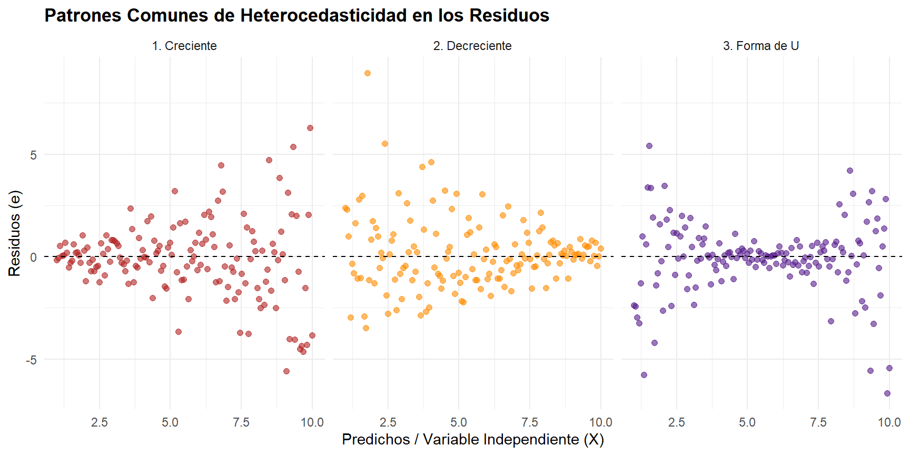

5 Variables Dummy
Una variable Dummy (o típicamente variable indicadora) es una variable que toma el valor de 1 o 0 dependiendo de si se cumple o no una condición. Por ejemplo, si queremos estudiar el efecto de ser hombre o mujer en los ingresos, podemos crear una variable Dummy que tome el valor de 1 si la persona es hombre y 0 si es mujer.
5.1 Modelo de Regresión Simple con Variables Dummy
En términos univariados el modelo queda escrito de la siguiente manera:
\[ Y = \beta_0 + \beta_1D + \varepsilon \]
Donde el valor esperado para una persona hombre es:
\[ E(Y | D=1) = \beta_0 + \beta_1 \]
Así, el valor esperado para una persona mujer es:
\[ E(Y | D=0) = \beta_0 \]
La interpretación de \(\beta_1\) es el cambio en los ingresos esperado al cambiar de mujer a hombre. Gráficamente, el modelo se ve de la siguiente manera:

5.2 Modelo de Regresión Múltiple con Variables Dummy
En contextos multivariados, podemos incluir variables Dummy junto con otras variables continuas. Por ejemplo, si queremos estudiar el efecto de la educación y el género en los ingresos, podemos tener un modelo como:
\[ Y = \beta_0 + \beta_1D + \beta_2X + \varepsilon \]
Donde la interpretación cambiará dependiendo de la variable Dummy y la variable continua. En este caso, \(\beta_1\) representará el efecto del género en los ingresos, mientras que \(\beta_2\) representará el efecto de la educación en los ingresos. Por lo tanto, el valor esperado de los ingresos para una persona hombre con un nivel de educación \(X\) será:
\[ E(Y | D=1, X) = \beta_0 + \beta_1 + \beta_2X \]
Así, el valor esperado para una persona mujer con el mismo nivel de educación \(X\) será:
\[ E(Y | D=0, X) = \beta_0 + \beta_2X \]
La interpretación de \(\beta_1\) es el cambio en los ingresos esperado al cambiar de mujer a hombre, manteniendo constante el nivel de educación.
Gráficamente, el modelo se ve de la siguiente manera:
## `geom_smooth()` using formula = 'y ~ x'
5.3 Interacciones
En nuestro modelo, también podemos incluir interacciones entre variables Dummy y continuas. Por ejemplo, si queremos ver si el efecto de la educación en los ingresos difiere entre hombres y mujeres, podemos incluir un término de interacción:
\[ Y = \beta_0 + \beta_1D + \beta_2X + \beta_3(D \times X) + \varepsilon \]
En este caso, \(\beta_3\) nos dirá si el efecto de la educación en los ingresos es diferente para hombres y mujeres. Si \(\beta_3\) es positivo, significa que el retorno a la educación es mayor para los hombres que para las mujeres, y viceversa.
Entonces, el valor esperado de los ingresos para una persona hombre con un nivel de educación \(X\) será:
\[ E(Y | D=1, X) = \beta_0 + \beta_1 + \beta_2X + \beta_3X \]
\[ E(Y | D=1, X) = (\beta_0 + \beta_1) + (\beta_2 + \beta_3)X \]
Así mismo, el efecto de los ingresos de una persona mujer con el mismo nivel de educación \(X\) será:
\[ E(Y | D=0, X) = \beta_0 + \beta_2X \]
Gráficamente, el modelo con interacción se ve de la siguiente manera:
## `geom_smooth()` using formula = 'y ~ x'